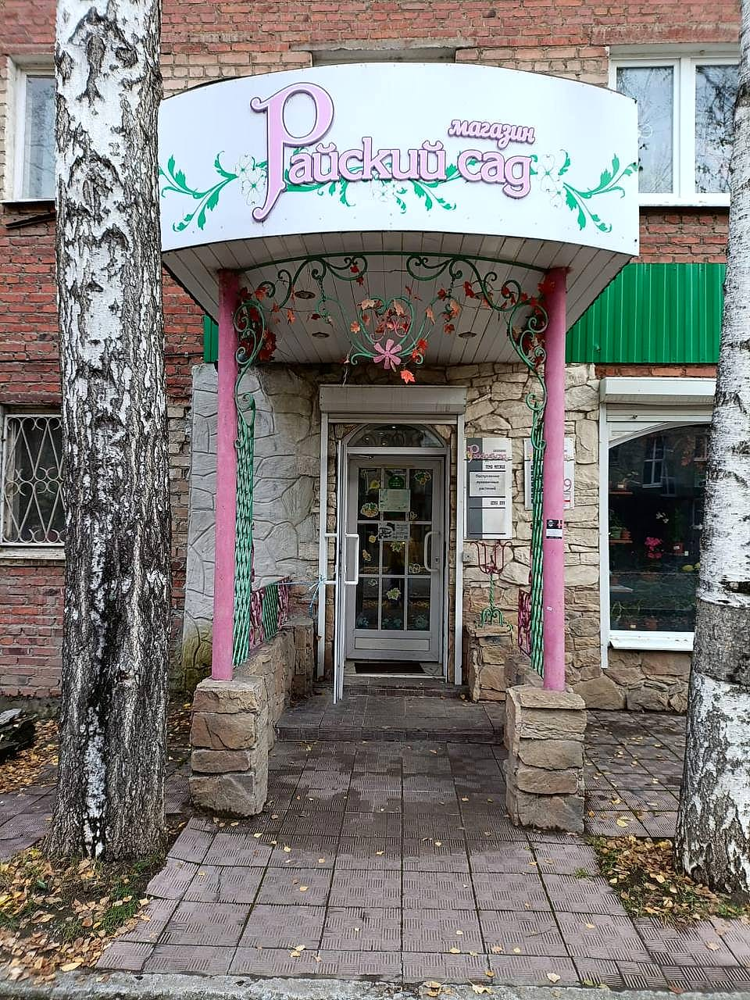
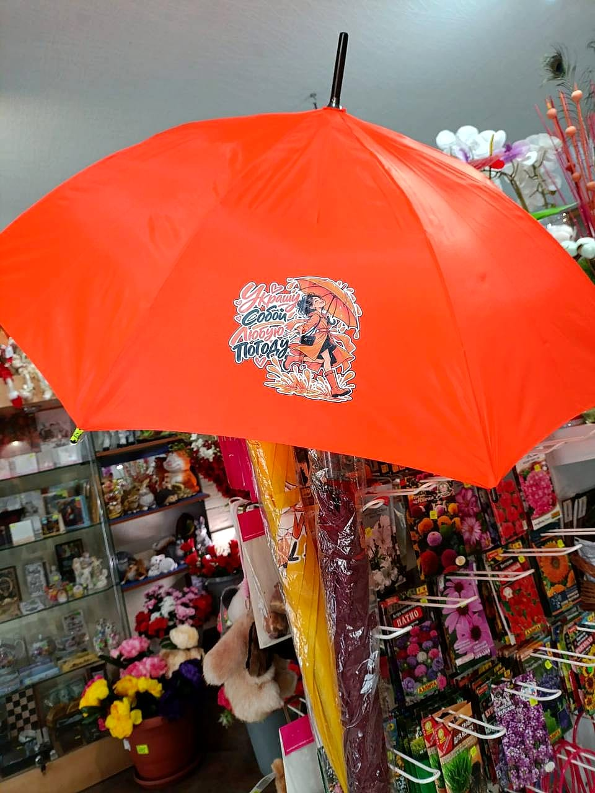
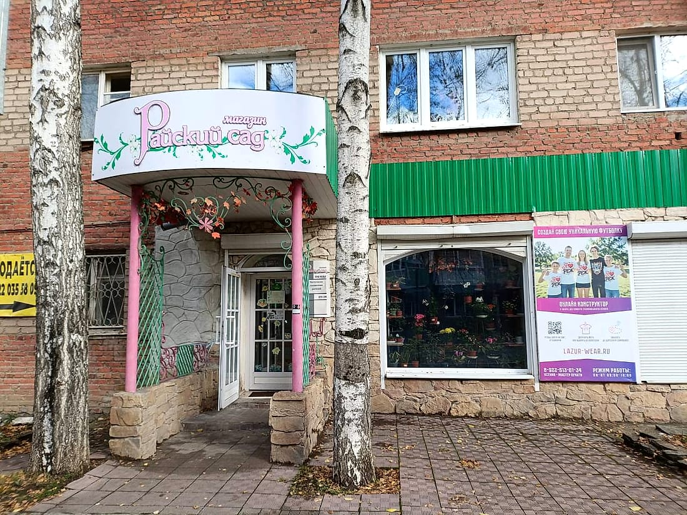

«Райский сад» — магазин в Реже, где можно купить готовую сувенирную продукцию «Лазури»: футболки с принтами, кружки, магниты, открытки и многое другое. И, конечно, цветы.
Всё, что вы видите на витринах, придумано и напечатано на нашем производстве. Заходите, чтобы выбрать подарок себе или близким — с видами Режа и Урала и с характером нашего города.

«Райский сад» работает в Реже рядом с нашим производством. Это место, где продукция «Лазури» встречается с покупателями — без заказов и тиражей: выбрали и забрали.
Футболки, кружки, магниты, открытки и другие сувениры мы разрабатываем и печатаем сами — на собственном оборудовании.
Виды города, местные достопримечательности, герои и надписи с характером — подарок, который по-настоящему напоминает о нашем крае.
В магазине есть свежие цветы — удобно зайти за букетом и сразу выбрать к нему подарок на память.
Открытки и настольная игра-раскраска «Город Реж», книги, ручки, подарочные наборы, деревянные сувениры, колокольчики и многое другое. Листайте витрины — ассортимент пополняется.
Кружки с «Я ❤ Реж» и забавными героями, памятные тарелки с достопримечательностями и целая стена магнитов — на любой вкус и бюджет.
Белые, чёрные и цветные — с рисунками о Реже, Урале и просто с настроением. Принты мы наносим сами, поэтому можем сделать такую же футболку со своим рисунком или надписью.

Помимо футболок и кружек на нашем производстве можно нанести рисунок на зонты, сумки и другие изделия. Хотите такой же подарок со своим дизайном — оставьте заявку.
Вход — под розовыми колоннами со светлой вывеской «Райский сад», рядом с берёзами.

Напечатаем футболки, кружки, магниты и открытки — от одной штуки до больших тиражей. Оставьте заявку, менеджер свяжется с вами.